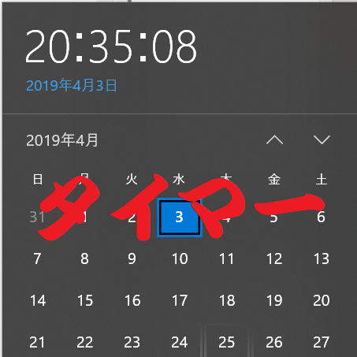

VBAでのタイマー処理（SetTimer,OnTime）

VBAでタイマー処理（一定時間間隔で処理）を行う方法についての解説です。
今回の主題としては、WindowsAPIのSetTimerを紹介します。
次にWindowsAPIのSetTimerを紹介します。
特にSetTimerの実行時は、Excel強制終了に巻き込まれないように注意してください。
そういう危険性もあるということを承知の上で実行してください。
Application.OnTime メソッド
文字列としてのプロシージャー名を起動する方法（Run,OnTime）
時刻になったら音を鳴らして知らせる（OnTime）
では、サンプルになります。
Option Explicit
Public mOnTime As Date
Sub TimerProc()
Range("A1") = Now()
End Sub
Sub OnTimeStart()
Call TimerProc
mOnTime = Now() + TimeSerial(0, 0, 1)
Call Application.OnTime(mOnTime, "OnTimeStart")
End Sub
Sub OnTimeStop()
'同一のProcedureとEarliestTimeがないとエラーになる
On Error Resume Next
Call Application.OnTime(mOnTime, "OnTimeStart", , False)
End Sub
プロハージャー「OnTimeStart」を実行すると、
アクティブシートのA1セルに日時が1秒ごとに更新されて表示されます。
普通のデジタル時計です。
これが実行されている間も、他のExcel作業は普通に行えます。
カーソルがチカチカしていないでしょうか。
僅かで一瞬ですがウエイトカーソルになっているのが確認できるはずです。
どうも嫌ですよね。（まあ、気分の問題ですけど…）
WindowsAPI:SetTimer関数
Option Explicit
Public Declare PtrSafe Function SetTimer Lib "USER32" _
(ByVal hwnd As Long, _
ByVal nIDEvent As Long, _
ByVal uElapse As Long, _
ByVal lpTimerFunc As LongPtr) As Long
Public Declare PtrSafe Function KillTimer Lib "USER32" _
(ByVal hwnd As Long, _
ByVal nIDEvent As Long) As Long
Public mTimerID As Long
Sub TimerProc()
If mTimerID = 0 Then End '終了できない時の対策
On Error Resume Next 'デバッグ出すとExcelが固まるので
Range("A1") = Now()
End Sub
Sub TimerStart()
If mTimerID <> 0 Then
MsgBox "起動済です。"
Exit Sub
End If
mTimerID = SetTimer(0&, 1&, 1000&, AddressOf TimerProc)
End Sub
Sub TimerStop()
Call KillTimer(0&, mTimerID)
mTimerID = 0
End Sub
引数の説明
| hWnd | タイマーに関連付けるウィンドウのハンドル |
| nIDEvent | タイマーID(任意の値、0以外) |
| uElapse | タイマーの間隔（ミリ秒単位1/1000秒） |
| lpTimerFunc | タイマーのコールバック関数のポインタを指定 |
エクセルが操作不能になったり、
Excelそのものを終了しても勝手にExcelが立ち上がってしまったり、
いろいろとめんどうな事が起こったりします。
If mTimerID = 0 Then End '終了できない時の対策
On Error Resume Next 'デバッグ出すとExcelが固まるので
これらを一応入れていますが、テスト過程では決して過信しないでください。
最悪、Windowsを終了しても良いくらいのつもりで実行してもらえれば問題ありませんが、
少なくとも、Excelはタスクを終了しても良いつもりで実行してください。。
もちろん、ちゃんとVBAを書けばちゃんと動きます。
これで停止させずにExcelを閉じた場合、非表示状態のExcelがタスクに残る場合があります。
新たにエクセルを起動できなくなった等の現象になった場合は、タスクマネージャーを確認してください。
1回起動すると、その後は指定間隔ごとにプロシージャーが起動されます。
このタイマーを止めるものが、KillTimer関数になります。
アクティブシートのA1セルに日時が1秒ごとに更新されて表示されます。
OnTimeと違って、カーソルがチカチカしないはずです。
動いていることを意識できないくらいスムーズに動作している事が確認できると思います。
最後に
タイマー処理自体はプログラミングとしては普通の事ですので、知識としては覚えておくこと良いでしょう。
同じテーマ「マクロVBA技術解説」の記事
ドキュメントプロパティ（BuiltinDocumentProperties,CustomDocumentProperties）
VBAでファイルを既定のアプリで開く方法
Excelアドインの作成と登録について
VBAでのタイマー処理（SetTimer,OnTime）
マクロでShift_JIS文字コードか判定する
Byte配列と文字コード関数について
VBA+SeleniumBasicで検索順位チェッカー（改）
Applicationを省略できるApplicationのメソッド・プロパティ一覧
PowerQueryの強力な機能をVBAから利用する方法
ShapesとDrawingObjectsの相違点と使い方
新規挿入可能なシート名の判定
新着記事NEW ・・・新着記事一覧を見る
VBA100本ノック 100本目：WEBから100本ノックのリストを取得｜VBA練習問題（3月3日）
VBA100本ノック 99本目：自動席替え（行列と前後左右が全て違うように）｜VBA練習問題（3月2日）
VBA100本ノック 98本目：席替えルールが守られているか確認｜VBA練習問題（3月1日）
VBA100本ノック 97本目：Accessデータを取得（グループ集計）｜VBA練習問題（2月27日）
VBA100本ノック 96本目：Accessデータを取得（マスタ結合&抽出）｜VBA練習問題（2月26日）
VBA100本ノック 95本目：図形のテキストを検索するフォーム作成｜VBA練習問題（2月24日）
VBA100本ノック 94本目：表範囲からHTMLのtableタグを作成｜VBA練習問題（2月23日）
VBA100本ノック 93本目：複数ブックを連結して再分割｜VBA練習問題（2月22日）
VBA100本ノック 92本目：セルの色を16進で返す関数｜VBA練習問題（2月20日）
VBA100本ノック 91本目：時間計算（残業時間の月間合計）｜VBA練習問題（2月19日）
アクセスランキング ・・・ ランキング一覧を見る
1.最終行の取得（End,Rows.Count）｜VBA入門
2.RangeとCellsの使い方｜VBA入門
3.変数宣言のDimとデータ型｜VBA入門
4.マクロって何？VBAって何？｜VBA入門
5.Range以外の指定方法（Cells,Rows,Columns）｜VBA入門
6.セルのコピー&値の貼り付け（PasteSpecial）｜VBA入門
7.繰り返し処理（For Next)｜VBA入門
8.セルに文字を入れるとは（Range,Value）｜VBA入門
9.マクロはどこに書くの（VBEの起動）｜VBA入門
10.とにかく書いてみよう（Sub,End Sub）｜VBA入門
- ホーム
- マクロVBA応用編
- マクロVBA技術解説
- VBAでのタイマー処理（SetTimer,OnTime）
このサイトがお役に立ちましたら「シェア」「Bookmark」をお願いいたします。
記述には細心の注意をしたつもりですが、
間違いやご指摘がありましたら、「お問い合わせ」からお知らせいただけると幸いです。
掲載のVBAコードは動作を保証するものではなく、あくまでVBA学習のサンプルとして掲載しています。
掲載のVBAコードは自己責任でご使用ください。万一データ破損等の損害が発生しても責任は負いません。